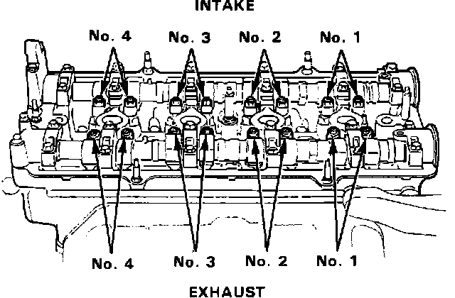
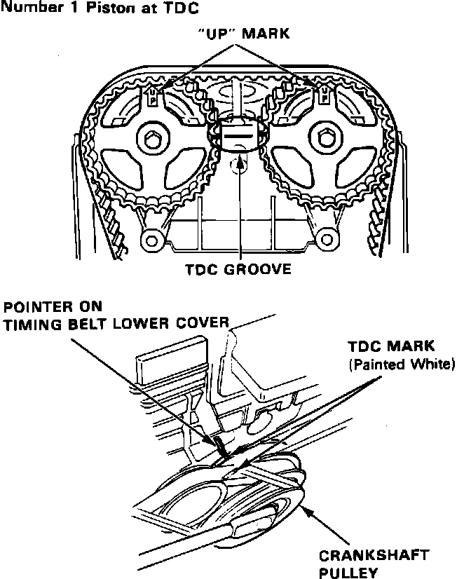
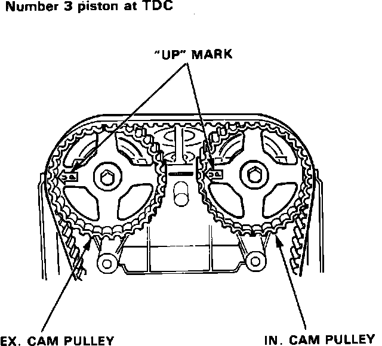
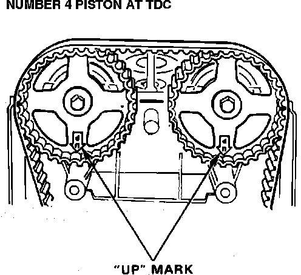
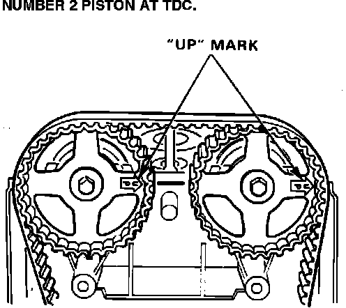

Valve Clearance: Adjustments
Valve Identification:

1. Remove valve cover and upper timing belt cover.
2. Rotate crankshaft counterclockwise. Align #1 cylinder to TDC compression stroke.
NOTE: If crankshaft bolt loosens, retorque to 130 ftlb (180 Nm).
#1 Cylinder TDC:

3. Ensure arrows on camshaft sprockets are up, TDC mark on cylinder head is aligned with marks on camshafts, and white mark on crankshaft is aligned with pointer on timing belt cover.
NOTE: Valves should be adjusted with cylinder head temperature below 100°F (38°C).
4. Adjust valve clearance on cylinder #1. Loosen locknut and turn adjustment screw until feeler gauge slides back and forth with a slight amount of drag.
VALVE CLEARANCE:
Intake 0.006 - 0.007 in (0.15 - 0.19 mm)
Exhaust 0.007 - 0.008 in (0.17 - 0.21 mm)
5. Tighten locknut and recheck clearance. Repeat adjustment if necessary.
LOCKNUT TORQUE: 18 ftlb (25 Nm)
#3 Cylinder TDC:

6. Rotate crankshaft 180° counterclockwise. The up arrows on the camshaft sprockets should be facing the exhaust side of engine.
7. Adjust valves on cylinder #3. Repeat steps #4 and #5.
#4 Cylinder TDC:

8. Rotate the crankshaft 180° counterclockwise. The up arrows should be facing down.
9. Adjust valves on cylinder #4. Repeat steps #4 and #5.
#2 Cylinder TDC:

10. Rotate the crankshaft 180° counterclockwise. The up arrows should be facing the intake side of engine.
11. Adjust valves on cylinder #2. Repeat steps #4 and #5.
12. Install valve cover and upper timing belt cover.